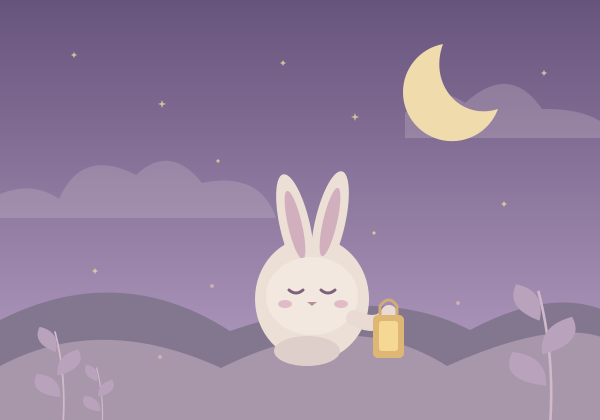

YOUR LITTLE EVENING RITUAL
✦ GOOD EVENING, DREAMERS
Little stories.
Big dreams.
Let the day drift away. A world of gentle adventures
is waiting for your favorite little person.
One more story.
One closer cuddle.
A lovely way to end the day.TONIGHT’S LITTLE ESCAPE
Follow a
little light.
A curious rabbit discovers that the smallest
adventures can leave the warmest glow.
Wonder3 chapters~2 min read

A small story. A softer night.No stories on this shelf yet.
Try another mood, clear your search, or add a favorite.
Every little idea deserves a story.
Pick a character. Add a little imagination. Make a reading draft together.
A fixed local template, your words, and included illustrations. Not an AI service.Original sample stories · Local sample narration · Changes last only until refresh